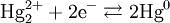
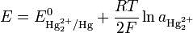

Электроды второго рода. Каломельный электрод. Окислительно-восстановительные электроды.
Электроды второго рода
Состоят из металла, покрытого слоем труднорастворимой соли этого металла и опущенного в раствор соли, образующей такой же анион, как и труднорастворимое соединение металла. Электроды второго рода обладают высокой стабильностью потенциалов и применяются в качестве электродов сравнения.
Электроды второго рода представляют собой металлические электроды, покрытые слоем труднорастворимой соли того же металла. При погружении в раствор соли одноименного аниона его потенциал будет определяться активностью иона в растворе.
а) Хлорсеребряный электрод (ХСЭ) Ag, AgCl|Cl – представляет собой серебряный проводник, покрытый твердым AgCl, который погружен в насыщенный раствор KCl.
б) Каломельный электрод (КЭ) Hg, Hg 2Cl 2|Cl – – это ртуть, находящаяся в контакте с пастой из смеси ртути и каломели Hg 2Cl 2, которая, в свою очередь, соприкасается с насыщенным раствором KCl.
Каломельный электрод — электрод, использующийся в качестве электрода сравнения в гальванических элементах. Каломельный электрод состоит из платиновой проволочки, погружённой в каплю ртути, помещённую в насыщенный каломелью раствор хлорида калия определённой концентрации. Схематически его записывают следующим образом: Pt|Hg|Hg2Cl2|Cl- ...
Уравнение окислительно-восстановительного процесса, протекающего в каломельном электроде, имеет вид  Уравнение Нернста для него может быть записано следующим образом:
 Здесь E0 — стандартный электродный потенциал процесса, aHg — активность ионов Hg+ в растворе. Поскольку каломель является малорастворимым соединением, активность ионов Hg+ связана с активностью хлорид-ионов через величину произведения растворимости Ksp.
Потенциал каломельного электрода зависит, таким образом, только от температуры и активности хлорид-ионов. На практике обычно используется насыщенный раствор KCl; в этом случае потенциал насыщенного каломельного электрода зависит только от температуры и составляет 0.2412 В при 25 °С.
Достоинством насыщенных каломельных электродов является хорошая воспроизводимость потенциала. Работоспособны при температурах до 80 °С; при более высоких температурах начинается разложение каломели. Ввиду токсичности ртути, содержащейся в каломельных электродах, в настоящее время они применяются сравнительно редко.
Окислительно-восстановительный электрод - в электрохимии - система из инертного электронного проводника (металла), находящегося в контакте с раствором электролита, содержащим окисленную и восстановленную форму одного и того же химического элемента или соединения.